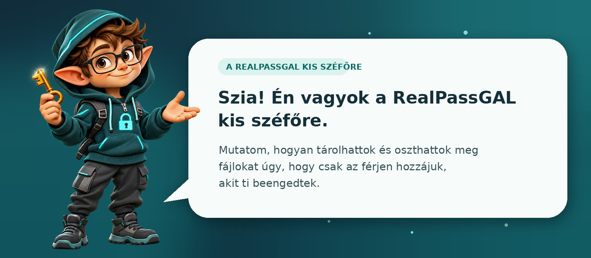
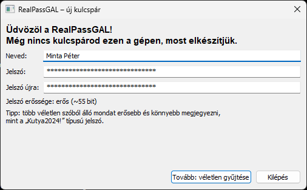
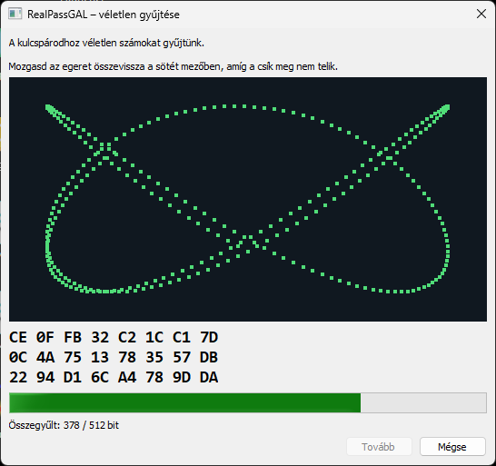
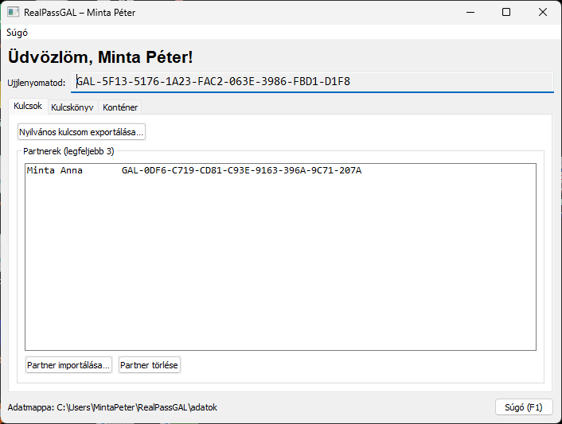
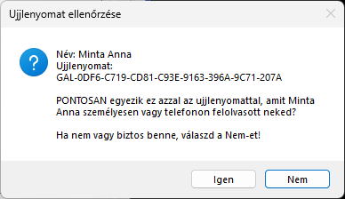
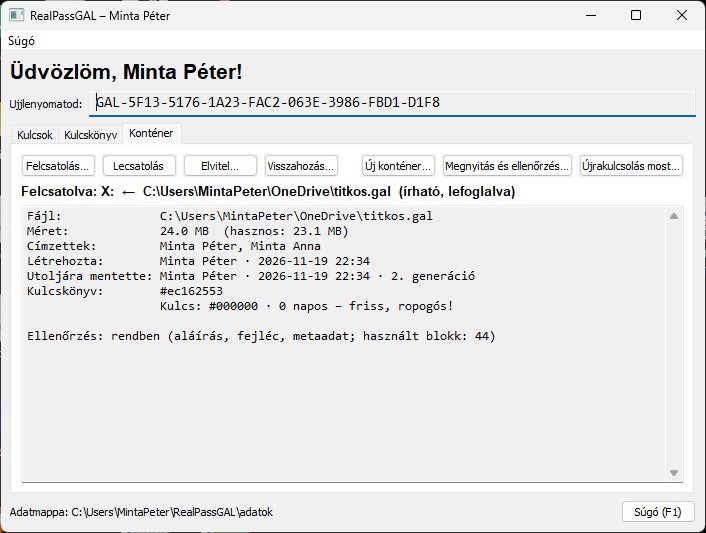
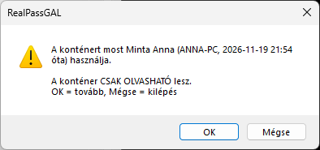

A RealPassGAL egy zsebre tehető széf: egyetlen fájl a gépeden, pendrive-on vagy a OneDrive-on. Kulcs nélkül értelmetlen adathalmaz – a kulcsoddal meghajtóként nyílik, mint egy pendrive.

A ZIP egyetlen jelszóra bízza a titkot, és ezt a jelszót valahogy át kell adnod. A RealPassGAL-nál semmi titkos nem utazik a neten.
A saját kulcspárod, amelyet a jelszavad véd – és egy közös kulcskönyv, amelyet személyesen adtok át. Aki csak az egyiket szerzi meg, annak zárva marad.
Egymillió oldal, mindegyiken más kulcs. A széfen csak az áll: „nyisd ki a 7. oldallal” – de a könyv csak nálatok van. 30 naponta lapoztok egyet.
Akár négyen is használhatjátok. Ha valaki dolgozik benne, a többieknél csak olvasható – senki nem írja felül a másikat.
Az első beállítás egy közös kávé alatt megvan. Utána a széfet úgy használod, mint egy pendrive-ot.
Valódi képernyőképek, mintaadatokkal. Kattints a nagyításhoz – vagy indítsd el a beépített, narrált bemutatót: RealPassGAL.exe -demo.






Windows 10/11, 64 bit. A program hordozható: egy mappa, benne a program és a kulcsaid.
Frissítésnél ugyanígy: a kulcsaidhoz nem nyúl.